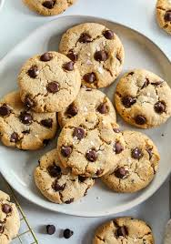

Spahgetti Carbonara

A classic Italian Pasta Dish Made with eggs, cheese, pancetta and
pepper.
Ingredients:
- Spaghetti
- Pancetta
- Eggs
- Parmesan Cheese
- Black Pepper
Steps:
- Boil the Spaghetti.
- Fry the pancetta.
- Mix eggs and cheese.
- Combine all Ingredients
- Serve with a Sprinkle of Pepper
Chicken Curry

A flavourful and spicy chicken dish made with a blend of spices and
coconut milk.
Ingredients:
- Chicken
- Onions
- Garlic
- Curry Powder
- Coconut Milk
Steps:
- Sauté onions and garlic.
- Add chicken and cook until browned.
- Add curry powder and cococnut milk.
- Simmer until chicken is cooked through.
- Serve with Rice.
Beef Tacos
Mexican-style beef tacos served with fresh topping and soft tortillas.
Ingredients:
- Ground Beef
- Onions
- Garlic
- Taco seasoning
- Tortillas
- Lettuce
- Cheese
- Tomatoes
Steps:
- Cook the ground beef with onions and garlic.
- Add taco seasoning
- Warm the tortillas
- Assemble the Tacos with beef, cheese, lettuce and tomatoes.
- Serve with salsa.
Vegetable Stir-Fry

A quick and health stir-fry made with a variety of fresh vegetables.
Ingredients:
- Brocolli
- Carrots
- Bell Peppers
- Soy Sauce
- Garlic
- Ginger
- Olive oil
Steps:
- Chop the vegetables.
- Sauté garlic and ginger in olive oil.
- Add the vegetables and stir fry.
- Pour soy sauce over the vegetables.
- Cook until vegetables are tender.
- Serve with Rice
Ceaser Salad

A classic Ceaser salad with romaine lettuce, croutons, and Caesar
dressing.
Ingredients:
- Romaine lettuce
- Croutons
- Caesar dressing
- Parmesan cheese
- Lemon juice
- Garlic
Steps:
- Chop the romaine lettuce.
- Mix the lettuce with croutons and Parmesan chesse.
- Add Caesar dressing and toss to coat.
- Serve with a squeeze of lemon juice.
Apple Pie
A traditional American dessert made with a buttery crust and sweet
apple filling.
Ingredients:
- Pie Crust
- Apples
- Sugar
- Cinamon
- Butter
Steps:
- Preheat the oven to 375°F (190°C).
- Peel and slice the apples.
- Mix apples with sugar and cinnamon.
- Place the apple mixture into the pie crust.
- Dot with butter and cover with top crust.
- Bake for 45 minutes or until golden brown.
- Let cool before serving.
Chocolate Chip cookies

Delicious homemade chocolate chip cookies that are soft and chewy.
Ingredients:
- Butter
- Sugar
- Brown Sugar
- Eggs
- Vanilla Extract
- Flour
- Basking Soda
- Salt
- Chocolate Chips
Steps:
- Preheat the oven to 350°F (175°C).
- Cream together butter, sugar, and brown sugar.
- Add eggs and vanilla extract.
- Mix in flour, baking soda, and salt.
- Stir in chocolate chips.
- Drop by spoonfuls onto a baking sheet.
- Bake for 10-12 minutes or until golden brown.
- Let cool on a wire rack.
Grilled Cheese Sandwich
A simple and comforting grilled cheese sandwich with melted cheddar
cheese.
Ingredients:
- Bread
- Cheddar cheese
- Butter
Steps:
- Butter the bread slices on one side.
- Place cheese between two slices, buttered sides out.
- Heat a skillet over medium heat.
- Cook the sandwich until golden brown and cheese is melted.
- Serve hot.